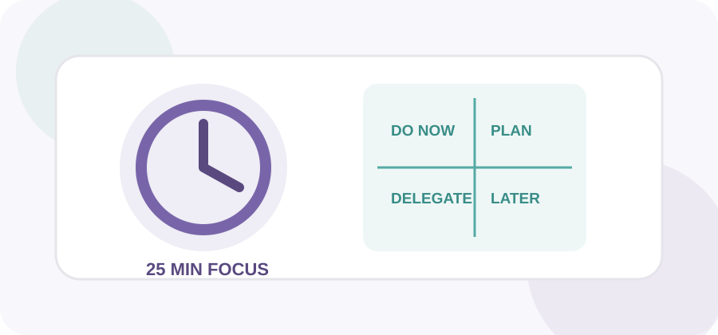

ProcrastiNO! / Resources
Recursos
Fuentes académicas, institucionales, videos y apoyos visuales para ampliar cada módulo.

APA
Procrastinación, aprendizaje y estrategias de estudio.
Abrir APA →WHO
Actividad física y comportamiento sedentario.
Abrir WHO →OSHA
Ergonomía y estaciones de trabajo.
Abrir OSHA →CISA
Copias de respaldo y regla 3-2-1.
Abrir CISA →YouTube · Pomodoro
Video de apoyo para estudiar por bloques.
▶ Ver videoYouTube · Eisenhower
Video breve sobre la matriz de prioridades.
▶ Ver videoReferencias APA 7
- American Psychological Association. (2022). Procrastination: What it is, why it’s a problem, and what you can do about it. https://www.apa.org/pubs/books/procrastination
- American Psychological Association. (2024). Better learning. https://www.apa.org/education-career/training/psyclearn-student-better-learning
- American Psychological Association. (2026). Why we procrastinate and what to do about it. https://www.apa.org/news/podcasts/speaking-of-psychology/procrastinate
- World Health Organization. (2020). WHO guidelines on physical activity and sedentary behaviour. https://www.who.int/publications/i/item/9789240015128
- Occupational Safety and Health Administration. (n.d.). Computer workstations. https://www.osha.gov/etools/computer-workstations/
- Occupational Safety and Health Administration. (n.d.). Monitors. https://www.osha.gov/etools/computer-workstations/components/monitors/
- Cybersecurity and Infrastructure Security Agency. (n.d.). Data backup options. U.S. Department of Homeland Security. https://www.cisa.gov/sites/default/files/publications/data_backup_options.pdf
- Pyhältö, K., Rekola, H., Salovuori, S., Kosola, S., & Anttila, H. (2025). The relationship between academic achievement and off-task social media and smartphone usage: Evidence from a systematic literature review. Acta Psychologica, 260, 105645. https://doi.org/10.1016/j.actpsy.2025.105645
- Salari, N., Zarei, H., Rasoulpoor, S., Ghasemi, H., Hosseinian-Far, A., & Mohammadi, M. (2025). The impact of social networking addiction on the academic achievement of university students globally: A meta-analysis. Public Health in Practice, 9, 100584. https://doi.org/10.1016/j.puhip.2025.100584
- Come Si Studia. (2021, July 26). Pomodoro Technique for Studying [Time Management] [Video]. YouTube. https://www.youtube.com/watch?v=ngh3H4jyRbA
- EISENHOWER. (2012, September 2). The Eisenhower Matrix: Explained in 2 Minutes [Video]. YouTube. https://www.youtube.com/watch?v=tT89OZ7TNwc